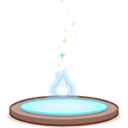
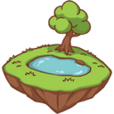
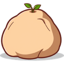
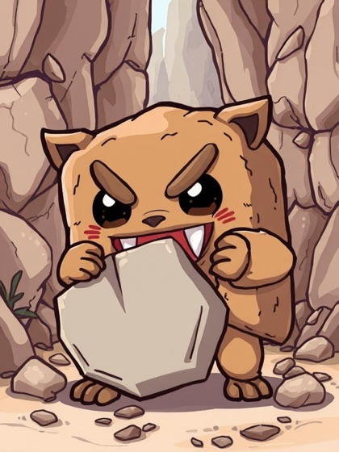
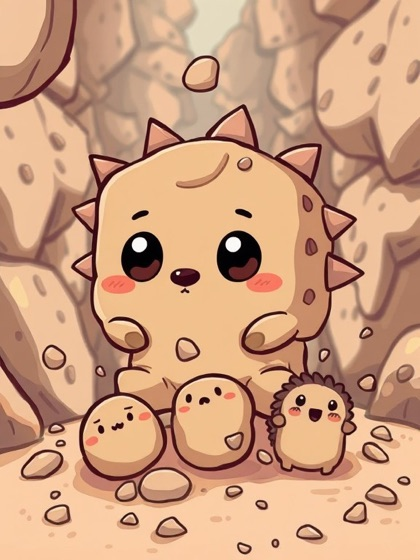
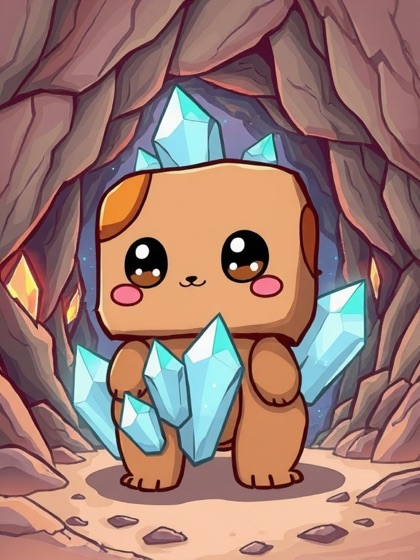

ทุกสกิลเกิดจาก DNA 2 สาย ของ Dyeling เช่น ลำตัวเผ่าไฟ + หัวเขี้ยว DNA ต่างกันก็ได้สกิลต่างกัน รวม 386 สกิล ทุกสกิลมีภาพวาดของตัวเอง · สกิลที่ไม่มีดาเมจใช้แล้วตีปกติต่อ 75% · ดูหน้า DNA
Every skill comes from two strands of DNA of a Dyeling — for example a Fire body + a Fang head. Different DNA, different skills: 386 in all, each with its own painting · a skill with no damage is followed by a 75% basic attack · see DNA.
 ดูสกิลทั้ง 386 สกิลในห้องสมุดSee all 386 skills in the Library
ดูสกิลทั้ง 386 สกิลในห้องสมุดSee all 386 skills in the Library
สกิล 8 แบบ8 kinds of skills
กดใช้Active 238 สกิลskills
ใช้เองตามรอบที่เขียนบนสกิล แทนการตีปกติในการลงมือครั้งนั้นfires by itself on the rounds written on it, instead of that action's attack
ติดตัวPassive 69 สกิลskills
ทำงานตลอดการต่อสู้ บางใบเริ่มในรอบที่ระบุworks the whole fight; some start on a set round
ตอบสนองReaction 29 สกิลskills
ทำงานเมื่อเกิดเหตุตามสกิล เช่น โดนตี หลบได้ เพื่อนล้ม · ถ้าเหตุคือ "โดนตี" จะตอบสนองครั้งเดียวต่อการลงมือของศัตรู 1 ครั้ง ต่อให้ศัตรูตีหลายฮิตgoes off when its event happens: hit, dodge, a friend falls · for "taking a hit" it reacts once per foe action, however many hits that action has

ออร่าAura 17 สกิลskills
แผ่ผลให้ทั้งทีมหรือกดศัตรู ตราบที่ผู้ใช้ยังยืนอยู่helps the team or weakens foes while its holder stands
คืนชีพRevive 8 สกิลskills
พาตัวเองหรือเพื่อนกลับมาเมื่อล้มbrings itself or a friend back after falling
อัญเชิญSummon 8 สกิลskills
เรียกร่างอัญเชิญลงสนามมาช่วยสู้calls a summon onto the field

สนามField 8 สกิลskills
เปลี่ยนพื้นสนาม มีผลกับตัวที่ยืนอยู่changes the floor for whoever stands on it
พิเศษSpecial 9 สกิลskills
กลไกเฉพาะใบa mechanic of its own
ธาตุแพ้ทางElement counters
น้ำWater›ไฟFire›ลมWind› 
ธาตุที่ชนะทางตีแรงขึ้น 7.5% ธาตุที่แพ้ทางตีเบาลง 7.5% · เผ่าผสมมี 2 ธาตุ จึงแกว่งน้อยกว่า · ธาตุของ Dyeling มาจากเผ่า (ลำตัว) ไม่เกี่ยวกับสายพันธุ์สัตว์
The winning element hits 7.5% harder, the losing one 7.5% softer · mixed tribes carry two elements, so they swing less · a Dyeling's element comes from its tribe (its body), never from its animal species.
ตัวอย่างสกิลSample skills

ทุบหินผาRock Smash
กดใช้Active · แกนปฐพี + DNA หัวเขี้ยวEarth Core + Fang Head DNA · ออกรอบ 2, 5, 8, 11 …rounds 2, 5, 8, 11 …
โจมตีเป้าเดี่ยว 250% ของ ATK ผู้ใช้ จนเกราะร้าว: เป้า DEF −14% 2 การลงมือของเป้า · หินแตก: เป้าที่ DEF สูงกว่าผู้ใช้ ดาเมจ ×1.4Attacks one target for 250% of the user's ATK and cracks its armor: target DEF −14% for its next 2 actions · stone breaks: ×1.4 damage on a target with higher DEF than the user

เม่นศิลาRock Urchins
อัญเชิญSummon · แกนปฐพี + DNA หนามหลังEarth Core + Back Spikes DNA · ออกรอบ 3, 7, 11, 15 …rounds 3, 7, 11, 15 …
เรียกเม่นหิน 2 ตัวลงช่องหน้าสุดที่ว่างฝั่งเรา (HP 6% ของ Max HP ผู้ใช้ · ATK 12% ของ ATK ผู้ใช้) อยู่ 3 รอบ ยั่วให้ศัตรูโจมตีปกติใส่ · ไม่มีช่องว่าง: ผู้ใช้ได้โล่เท่า HP เม่นSummons 2 stone urchins onto the front-most empty cells on our side (HP 6% of the user's Max HP · ATK 12% of the user's ATK) for 3 rounds; they taunt foes into basic-attacking them · no empty cell: the user gets a shield of the urchins' HP

ถ้ำผลึกCrystal Grotto
สนามField · แกนปฐพี + DNA ผลึกหลังEarth Core + Back Crystal DNA · ใช้รอบ 2 ครั้งเดียวonce, round 2
สนามกลายเป็นถ้ำผลึก 3 รอบ: ทีมเราได้โล่ 4% ของ Max HP แต่ละตัวทันที และโล่ของทีมเราแรงขึ้น 50%The field becomes a crystal cave for 3 rounds: our team gets a shield of 4% of their own Max HP at once and our shields are 50% stronger